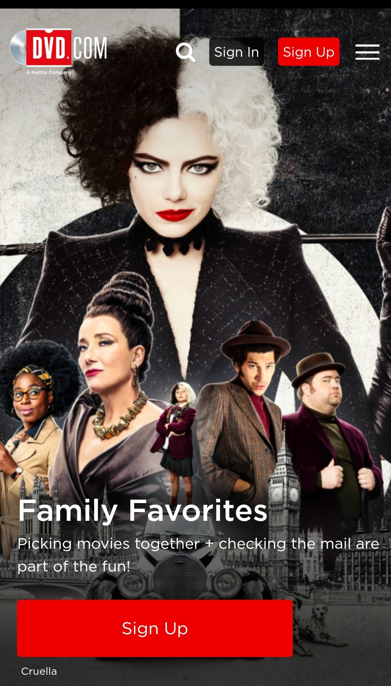
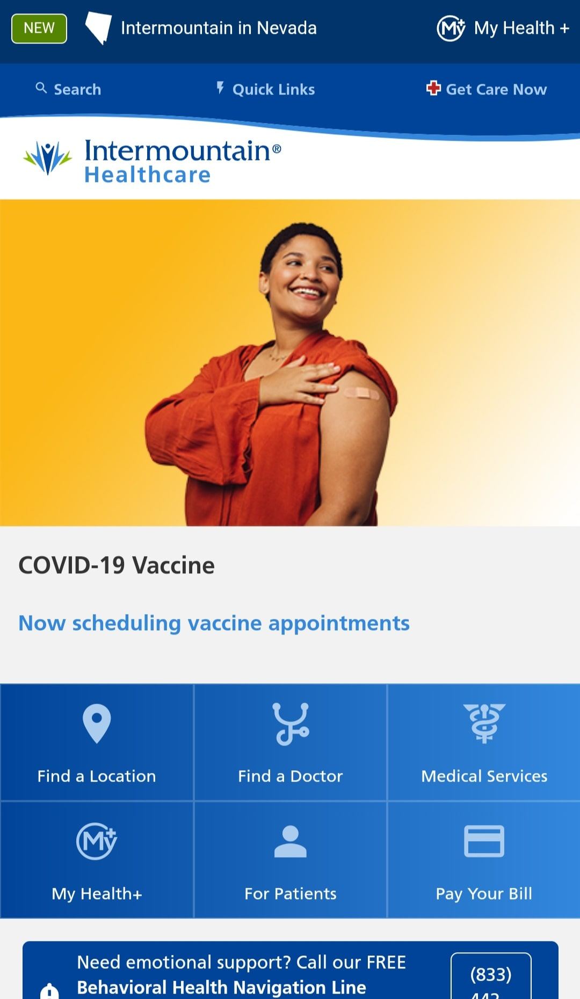
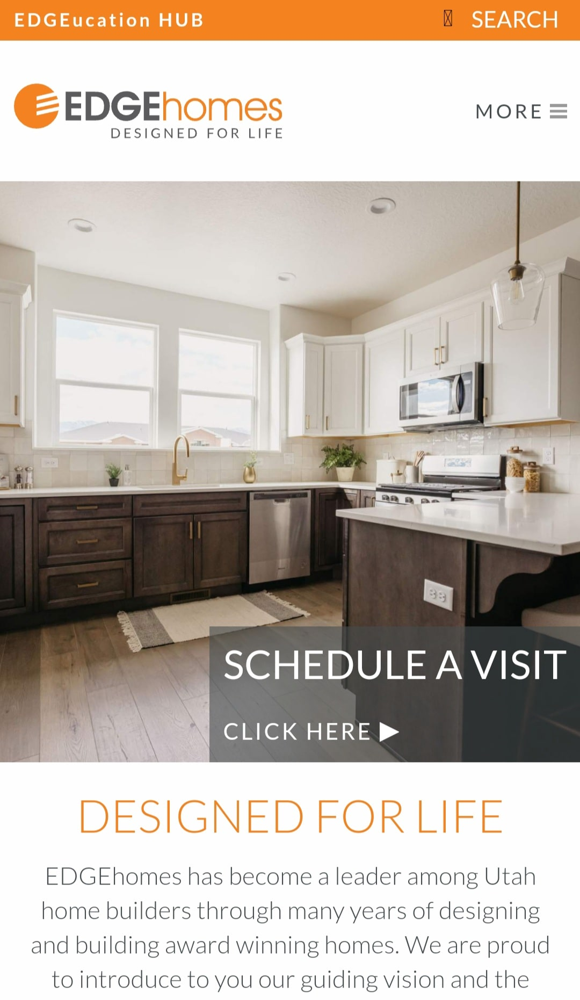

Visual Hierarchy
Netflix
Netflix.com Netflix's homepage exemplifies the principle of visual hierarchy by making it very clear what they want you to do. There are limited options. You can either search, sign in, or sign up. These options being given at the top of the page lets you know what you can do, and the large print saying "More to Watch" followed by smaller print letting you know that they add new content regularly followed by the big "sign up" button make it clear what you should do, and they make it easy to do what they want you to do, which is to sign up for their service.
Rule of thirds
Intermountain Healtcare
intermountainhealthcare.org Intermountain Healthcare's homepage exemplifies the principle of the rule of thirds first with their first image. The woman's arm is placed right on the line dividing the middle and last third of the photo to put it right where you'll look. By doing this they ensure that when you visit their site you'll be sure to see that she has had a shot in her arm. This lets you know that they want people to get vaccinated. They again use the rule of thirds down below where you can see your options of what to do on the website. They have clearly broken the page up into thirds with one option on each third across the screen. This use of the rule of thirds makes their page clear to understand and easy to use.
White space and clean design
Edge Homes
edgehomes.com Edge Homes' homepage exemplifies the principle of white space and clean design in two ways. First, their homepage is uncluttered and simple. They have their logo in the upper left corner of the page, and plenty of literal white space between that and the page menu so you know that the menu is not connected to the logo. Then the space is filled with the image of a clean, white kitchen. While this is an image, and not completely white space it is another way they are making use of white space and clean design. It is "white space" in that there isn't really anything in the space except for the photo and there is lots of white in the photo. The photo is also of a clean kitchen. And if you take out the photo, the only thing left on the page is button to schedule a visit, and some text telling you about the company. This page exemplifies the principle of white space and clean design by using an image to make you think there is more on the page when really, without the image there is just a logo, menu, a button, and a paragraph. But the use of white space makes it a beautiful and functional page.